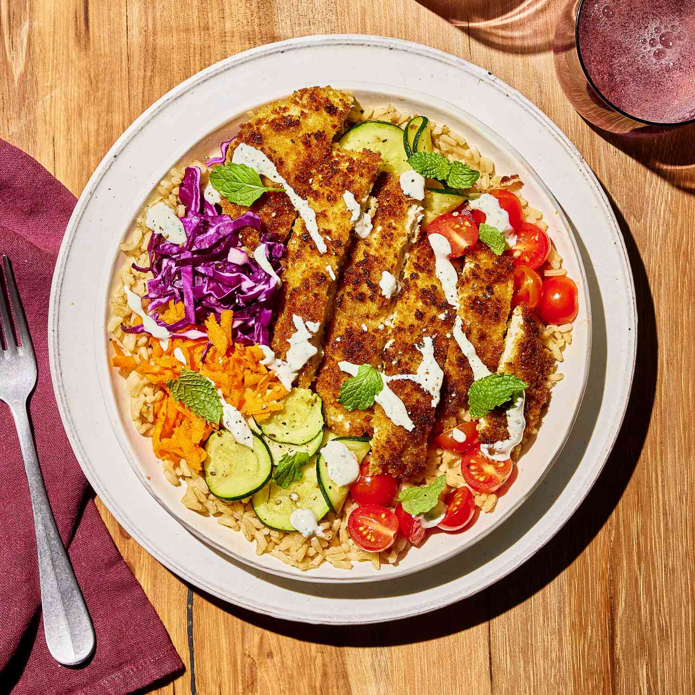
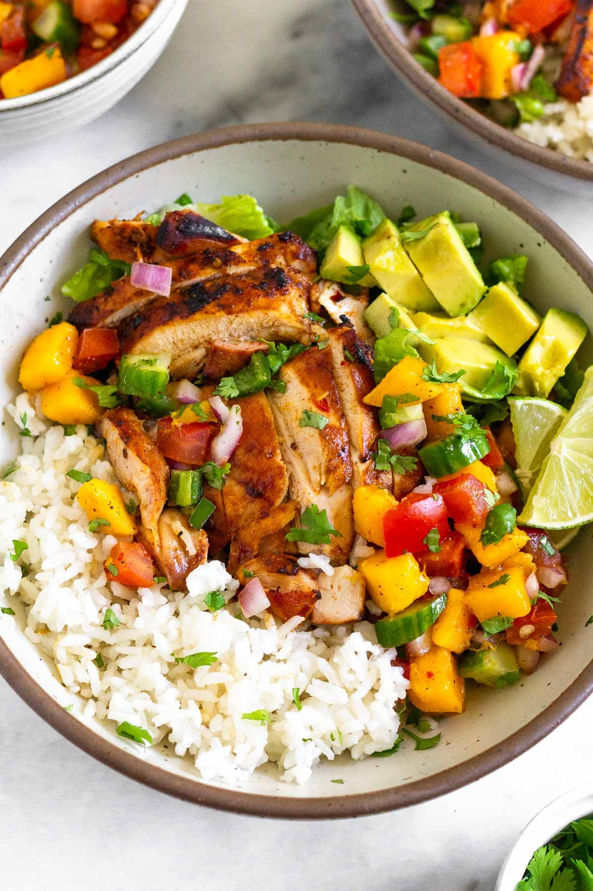
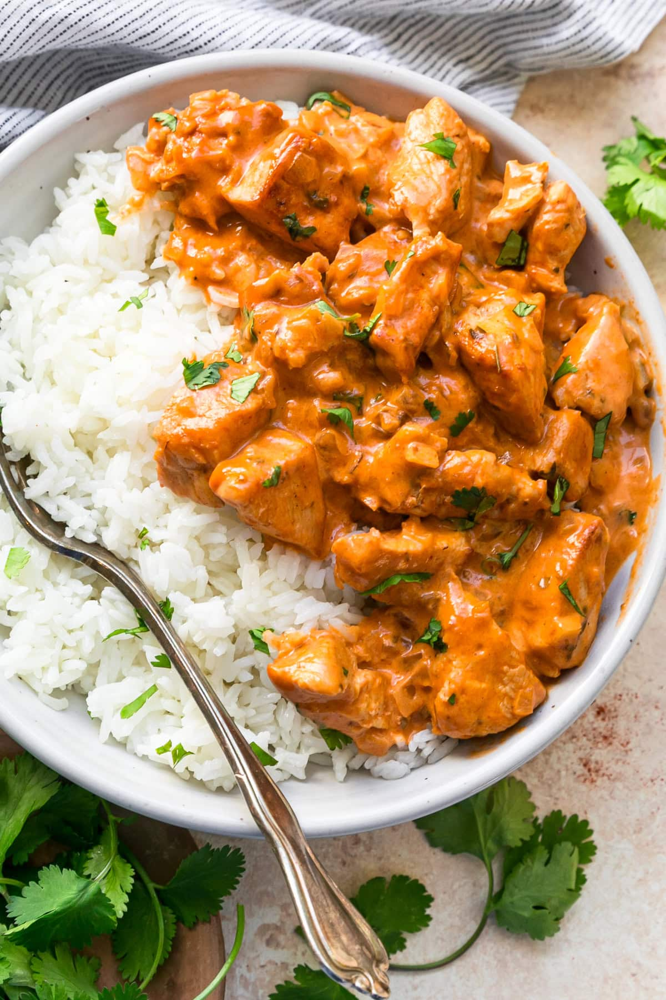

From classic grilled to spicy teriyaki, every bowl is made with love, nutrition, and flavor in mind. Dive into our recipes curated specially for night owls and fitness lovers.
Wholesome. Nutritious. Packed with flavor — our chicken & rice bowl is crafted to energize your late nights and workouts.
🕒 Prep Time: 10 min
🧑🍳 Cook Time: 20–25 min
🍽 Serves: 1
Cook the Rice:
Rinse the rice and boil with 2 cups of water and a pinch of salt.
Simmer for ~15 minutes until water is absorbed and rice is tender.
Set aside and fluff with a fork.
Cook the Chicken:
Season chicken breasts with salt, pepper, paprika, and garlic.
Heat 1/2 tbsp olive oil in a pan.
Cook chicken over medium heat for 6–7 minutes on each side, until fully cooked and golden brown.
Let it rest for 2–3 min, then slice.
Stir-Fry the Vegetables:
In the same pan, add 1/2 tbsp olive oil.
Add chopped vegetables and stir-fry for 4–5 minutes until slightly tender but still vibrant.
Optionally season with a little salt and lemon juice.
Assemble the Bowl:
Add a layer of rice to a bowl or plate.
Top with sliced chicken and sautéed vegetables.
Optional: garnish with fresh herbs (parsley or coriander) or a dollop of yogurt or hummus.
| Nutrient | Amount | Notes |
|---|---|---|
| Calories | ~525 kcal | Balanced energy |
| Protein | 42 g | Lean source (chicken) |
| Carbohydrates | 48 g | From rice & veggies |
| Sugar | 5 g | Natural from vegetables |
| Fat | 13.5 g | Healthy fats from oil |
| Fiber | 6 g | Helps digestion |
| Cholesterol | 90 mg | From chicken |
| Sodium | 350 mg | Seasoning dependent |